Next: QUIT command
Up: Command descriptions
Previous: PLOT command
Contents
Subsections
PRINT command
PRint
PRint mode points ... ...
PRint mode + points ... ...
PRint mode - points ... ...
PRint mode CLEAR
Select points in the circuit for tabular output. Select tabular output.
The `print' command selects where to look at the circuit, or where to
hook the voltmeter (ammeter, watt meter, ohm meter, etc.) probe.
There are separate lists of probe points for each type of analysis.
To list the probe points, use the bare command `print'.
On start-up, probes are not set. You must do the command `print op
v(nodes)' or put `.print op v(nodes)' in the circuit file to get any
output from the op command.
Syntax for each point is parameter(node), parameter(componentlabel), or parameter(index). Some require a
dummy index.
You can access components in subcircuits by connecting the names with dots.
For example: R56.X67.Xone is R56 in X67 in Xone.
Some built-in elements, including diodes, transistors, and mosfets, contain
subcircuits with internal elements. Cgd.M12 is the gate to drain
capacitor of mosfet M12.
If the component does not exist, you will get an error message. If the
component exists but the parameter is not valid for that type, there will be
no error message but the value printed will be obviously bogus.
The options plot and noplot on any analysis command turn
plotting on and off a single run. The plot command turns
plotting on and tabular output off. The print command turns plotting
off and tabular output on.
You can add to or delete from an existing list by prefixing with
+ or -. print ac + v(3) adds v(3) to the existing
set of AC probes. print ac - q(c5) removes q(c5) from the
list. You can use the wildcard characters * and ? when
deleting.
For AC analysis, by adding a suffix letter to the parameter, you can
get the magnitude M, phase P, real part R, or
imaginary part I. Adding DB gives the value in decibels,
relative to 1. For example, VRDB(R13) gives you the real part
of the voltage across R13, in decibels.
Several parameters are available at each node.
- V
- Voltage.
- Z
- Impedance looking into the node.
- Logic
- A numeric interpretation of the logic value at the node.
The value is displayed encoded in a number of the form 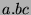 where
 is
the logic state: 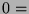 logic 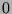, 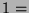 rising, 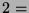 falling, 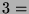 logic
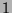. 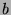 is an indication of the quality of the digital signal. is a
fully valid logic signal. Nonzero indicates it does not meet the criteria
for logic simulation. indicates how the node was calculated:
indicates logic simulation. indicates analog simulation of a logic
device. 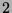 indicates analog simulation of analog devices.
is
the logic state: 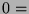 logic 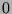, 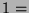 rising, 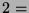 falling, 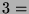 logic
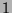. 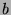 is an indication of the quality of the digital signal. is a
fully valid logic signal. Nonzero indicates it does not meet the criteria
for logic simulation. indicates how the node was calculated:
indicates logic simulation. indicates analog simulation of a logic
device. 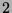 indicates analog simulation of analog devices.
There are several status variables that can be probed.
- Temperature(0)
- The simulation temperature in degrees Celsius.
- TIme(0)
- The current time in a transient analysis. In AC
analysis it shows the time at which the bias point was set, 0 if it was set
in a DC or OP analysis, or -1 if it is the bias was not set (power off).
- GEnerator
- The output of the ``signal generator''. In a
transient analysis, it shows the output of the signal generator, as set
up by the generator command. In a DC analysis, it shows the DC
input voltage (not the power supply). In an OP analysis, it shows the
DC input, normally zero.
- ITer(0)
- The number of iterations needed for convergence for
this printed step including any hidden steps.
- ITer(1)
- The number of iterations needed for convergence for
this printed step not including any hidden steps.
- ITer(2)
- The total number of iterations needed since startup
including check passes.
- Control(0)
- A number indicating why the simulator chose this
time to simulate at.
- 1 The user requested it. One of the steps in a sweep.
- 2 A discrete event. An element required a solution at this time.
- 3 The effect of the ``skip'' parameter.
- 4 The iteration count exceeded ITL4 so the last step was
rejected and is being redone at a smaller time step.
- 5 The iteration count exceeded ITL3 so the time interval
is the same as it was last time.
- 6 Determined by local truncation error or some other device
dependent approximation in hopes of controlling accuracy.
- 7,8 The step size was limited to twice the previous step size.
- 9 The step size was reduced to half the interval to an event
to avoid a tiny next step.
- 10 + x The previous step was rejected.
- 20 + x A zero time step was replaced by mrt.
- 30 + x The required step size less than mrt, so it was
replaced by mrt.
- Control(1)
- The number internal time steps. (1 if all steps are
printed. One more than the number of hidden steps.)
Each element type has several parameters that can be probed. In general,
the form is Parameter(element). Wild cards are allowed in element
names to allow probing the same parameter of a group of elements.
For components in a subcircuit, the names are connected with dots. For
example R12.X13 is R12 in the subcircuit X13.
Most two node elements (capacitors, inductors, resistors, sources) and
four terminal elements (controlled sources) have at least the
following parameters available. Others are available for some
elements.
- V
- Branch voltage. The first node in the net list is assumed
positive. This is the same as ``output voltage''.
- Vout
- Output voltage. The voltage across the ``output''
terminals.
- VIN
- Input voltage. The voltage across the ``input''
terminals. For two terminal elements, input and output voltages are
the same.
- I
- Branch current. It flows into the first node in the net
list, out of the second.
- P
- Branch power. Positive power indicates dissipation.
Negative power indicates that the part is supplying power. Its value
is the same as (PD - PS). In AC analysis, it is the real part only.
- NV
- Nominal value. In most cases, this is just the value
which is constant, but it can vary for internal elements of complex
devices.
- EV
- The effective value of the part, in its units. If the part
is ordinary, it will just show its value, but if it is time variant or
nonlinear, it shows what it is now.
- R
- Resistance. The effective resistance of the part, in ohms.
In AC analysis, shows the magnitude of the self impedance. In OP,
DC or TRansient analysis, shows its incremental resistance. In
TRansient analysis, it shows the effective Z-domain resistance of
inductors and capacitors.
- Y
- Admittance.
 .
.
- Z
- Impedance at a port. The port impedance seen looking
into the circuit across the branch. It does not include the part
itself. In transient analysis, it shows the effective Z-domain
impedance, which is a meaningless number if there are capacitors or
inductors in the circuit.
- ZRAW
- Impedance at a port, raw. This is the same as ``Z''
except that it includes the part itself.
These parameters are available in addition to the above.
- PD
- Branch power dissipated. The power dissipated in the
part. It is always positive and does not include power sourced.
- PS
- Branch power sourced. The power sourced by the part.
It is always positive and does not consider its own dissipation.
- F
- The result of evaluating the function related to the
part. It is the voltage across a resistor, the charge stored in a
capacitor, the flux in an inductor, etc.
- INput
- The ``input'' of the device. It is the current
through a resistor or inductor, the voltage across a capacitor or
admittance, etc. It is the value used to evaluate nonlinearities.
- IOffset
- The offset current in the device. The current
through a nonlinear device can be considered to have two parts: a
passive part and an offset.
- IPassive
- The passive part of the current.
These parameters are available in addition to the above. In addition
to those listed here, you can add a suffix (M, P, R, I and DB) for magnitude, phase, real part, imaginary part, and decibels, to
any valid probe. Some of them have a special meaning, which is listed
here. Negative phase is capacitive. Positive phase is inductive.
- PI
- Reactive (imaginary) power, volt-amps reactive.
- PIDB
- Decibels relative to 1 va reactive.
- PM
- Volt amps, complex power.
- PMDB
- Decibels relative to 1 va.
- PP
- Power phase (angle between voltage and current).
- print ac v(12) v(13) v(14)
- The voltage at nodes 12, 13, and 14
for AC analysis.
- print dc v(r26)
- The voltage across R26, for DC analysis.
- print tran v(r83) p(r83)
- Voltage and power of R83, for
transient analysis.
- print dc i(c8) p(r5) z(r5)
- The current through C8, power
dissipated in R5, and the impedance seen looking into the circuit
across R5.
- print op v(nodes)
- The voltage at all nodes for the op
command.
- print
- List all the probes, for all modes.
- print op
- Display the OP probe list.
- print ac clear
- Clear the AC list.
Next: QUIT command
Up: Command descriptions
Previous: PLOT command
Contents
Al Davis
2001-10-28